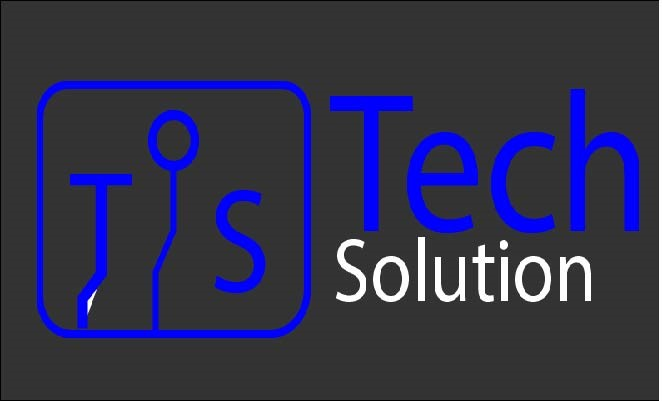
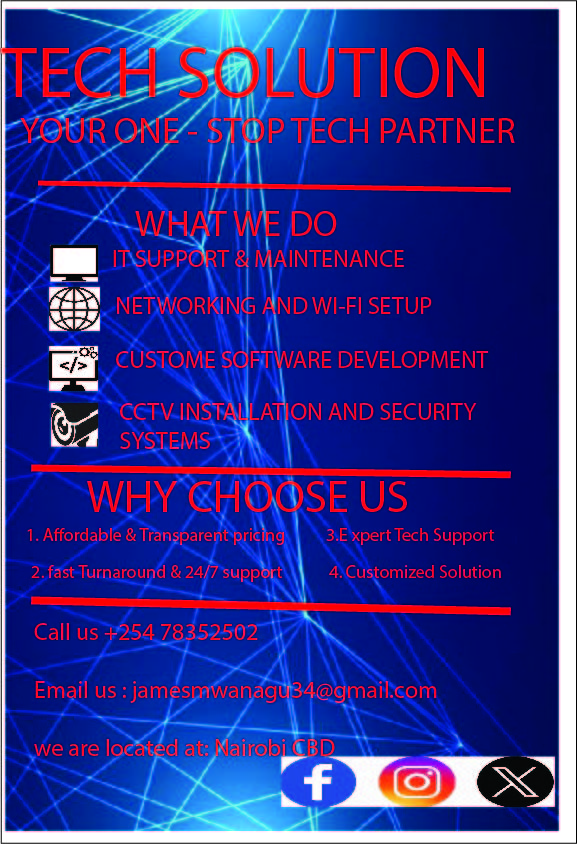
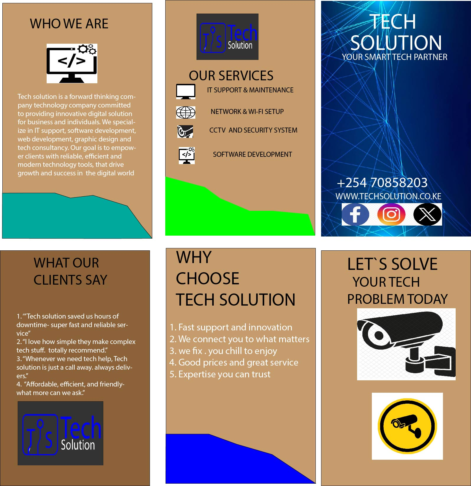
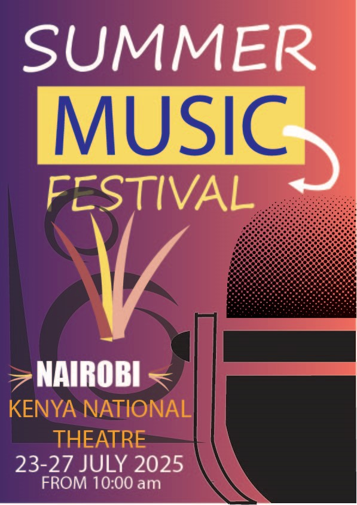
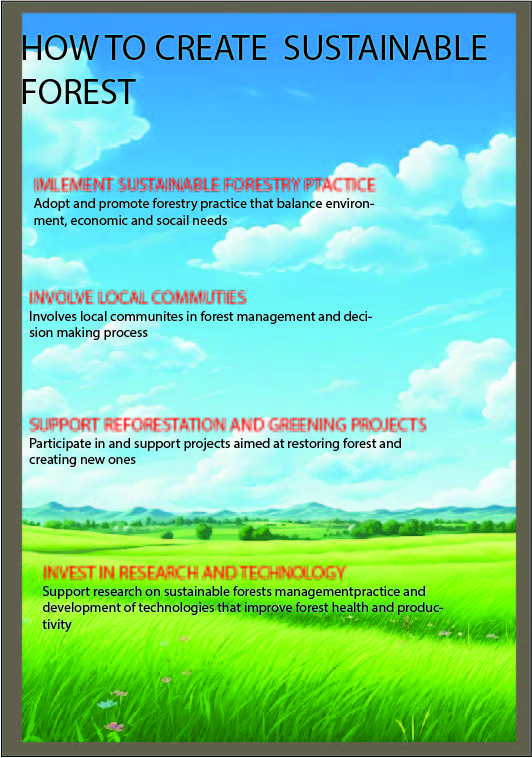

Tech solution logo
The TS Tech Solution logo features a clean, modern design that combines technology and creavity.The initial TS are styled with circuit-like lines enclosed in a rounded square, symbolizing digital innovation.The bold 'Tech' paired with the lighter 'Solution' reflects professionalism and balance, representing a company focused on graphics and web development.".
Tech Solution Business Card
"A modern and professional business card design for Tech Solution, featuring the manager's name (James Mwangu), title, contact details, and a sleek tech-themed background. The central graphic of a glowing digital globe in a hand symbolizes innovation and tech expertise. The tagline 'The best place you can be' reinforces the company’s commitment to quality in web development and graphic design services.

"This is a promotional flyer for *Tech Solution, branded as 'Your One-Stop Tech Partner'. It clearly outlines the company's core services including IT support, Wi-Fi/networking setup, custom software development, and CCTV installation. The flyer also highlights reasons to choose the company such as reliability, experience, and 24/7 support. The design uses tech-inspired visuals and color contrasts to grab attention and communicate professionalism."*

"This is a multi-panel flyer for *Tech Solution, highlighting its identity, services, benefits, and contact details. It features sections like 'Who We Are', 'Our Services', 'Why Choose Tech Solution', and a call-to-action: 'Let's Solve Your Tech Problem Today'. Services include IT support, CCTV installation, and software solutions. The design uses clean icons, bold headings, and a tech-themed color scheme to create a professional and informative look."*.

"This is a vibrant promotional poster for the *Summer Music Festival, designed with a gradient background and bold, modern typography. It highlights key event details: location (Nairobi, Kenya National Theatre), date (23–27 July 2025), and time (from 10:00 AM). Visual elements like a microphone and arrows emphasize the musical theme and dynamic energy of the event."

Sustainable forest flyer promoting eco-friendly community forestry practices.